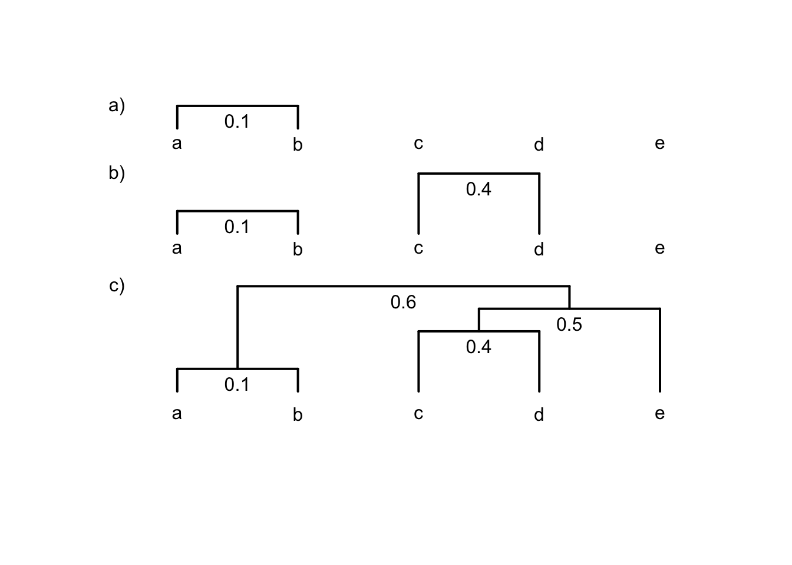
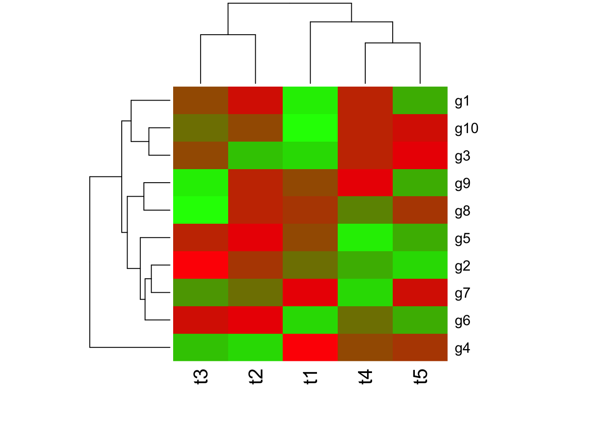
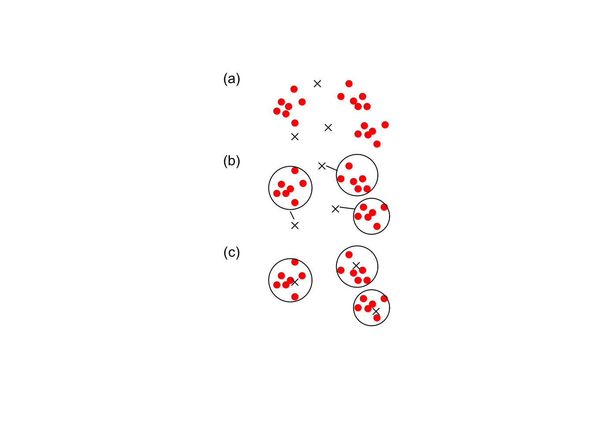

7 Multivariate distance and cluster analysis
7.1 Thinking about resemblence
We are often interested in the question of how similar two things might be and a natural way to quantify similar is to list those characters that are shared. For example, what genetic or morphological features are the sameo or different between two species? A resemblance measure quantifies similarity by adding up in some way the similarities and differences between two things. In fact, this type of overall measure of the relationship among objects or attributes is a strating point for most multivariate analyses, and is often the most critical step. We can express the shared characters of objects as either: similarity (S), which quantifies the degree of resemblance or dissimilarity (D) which quantifies the degree of difference.
| Attribute | Object 1 | Object 2 | Similarity |
|---|---|---|---|
| Attribute 1 | 1 | 0 | x |
| Attribute 2 | 0 | 1 | x |
| Attribute 3 | 0 | 0 | ✓ |
| Attribute 4 | 1 | 1 | ✓ |
| Attribute 5 | 1 | 1 | ✓ |
| Attribute 6 | 0 | 0 | ✓ |
| Attribute 7 | 0 | 1 | x |
| Attribute 8 | 0 | 0 | ✓ |
| Attribute 9 | 1 | 1 | ✓ |
| Attribute 10 | 1 | 0 | x |
7.2 Binary Similarity metrics
The simplest similarity metric just tallys the number of shared features. So we just indicate yes or no for each characteristic for each of the two things we wish to compare 7.1.
| Present | Absent | ||
|---|---|---|---|
| Object 1 | Present | a | b |
| Object 2 | Absent | c | d |
We could also find a shared lack of features and indicator of similarity. The simple matching coefficient uses both shared features, and shared absent features to quantify similarity as \(S_m=\frac{a+d}{a+b+c+d}\), where a refers to the number of characteristics that object 1 possesses and b is the number that object 2 possesses and so on (see 7.2).
We can further categorize similarity metrics as symmetric, where we regard both shared presence and shared absence as evidence of similarity. the simple matching coefficeint would be an example of this, or asymmetric, where we regard only shared presence as evidence of similarity (that is, we ignore shared absences). Asymmetric measures are most useful in analyzing ecological community data, since it is unlikely to be informative that two temperature zone communities lack tropical data, or that aquantic environments lack terrestrial species.
The Jaccard index is an asymteric binary similarity coefficient calculated as \(S_J=\frac{a}{a+b+c}\), while the quite similar Sørenson index is given as \(S_S=\frac{2a}{2a+b+c}\), and so gives greater weight to shared similarities.both metrics range from 0 to 1, where a value of 1 indicates complete similarity.
| species | erie | ontario |
|---|---|---|
| 1 | 1 | 1 |
| 2 | 1 | 1 |
| 3 | 1 | 1 |
| 4 | 1 | 1 |
| 5 | 1 | 1 |
| 6 | 1 | 1 |
| 7 | 1 | 1 |
| 8 | 1 | 1 |
| 9 | 1 | 1 |
| 10 | 1 | 1 |
| 11 | 1 | 1 |
| 12 | 1 | 1 |
| 13 | 1 | 1 |
| 14 | 1 | 1 |
| 15 | 1 | 1 |
| 16 | 1 | 1 |
| 17 | 1 | 1 |
| 18 | 1 | 1 |
| 19 | 1 | 0 |
| 20 | 0 | 1 |
| 21 | 0 | 0 |
| 22 | 0 | 0 |
| 23 | 0 | 0 |
| 24 | 0 | 0 |
Let’s try an example. In the 70s, Watson (1974) compared the zooplankton species present in Lake Erie and Lake Ontario. We can use this information to compare how similar the communities in the two lakes were at this time. We can see that they shared a lot of species 7.3!
We can calculate the similarity metrics quite easily using the table() function and the dataframe “lksp” where I have stored the data.
tlake=table(lksp[,c("erie","ontario")])
tlake ontario
erie 1 0
1 18 1
0 1 4a=tlake[1,1]
b=tlake[1,2]
c=tlake[2,1]
d=tlake[2,2]
S_j=a/(a+b+c)
S_j[1] 0.9S_s=2*a/(2*a+b+c)
S_s[1] 0.9473684We can also talk about the dissimilarity between things. When a disimilarity or similarity metric has a finite range, we can simply convert from one to the other. For example, for similarities that range from 1 (identical) to 0 (completely different), dissimilarity would simply be 1-similarity.
7.3 Quantitative similarity & dissimilarity metrics
While binary similarity metrics are easy to understand, there are a few problems. These metrics work best when we have a small number of characteristics and we have sampled very well (e.g., the zooplankton in Lake Erie and Ontario). The metrics are biased against maximum similarity values when we have lots of charactersitics or species and poor sampling.
In addition, we sometimes have more information than just a “yes” or “no” which we could use to further charactersitize similarity. Quantiative similarity and dissimularity metrics make use of this information. Problems with Binary similarity coefficients. Work best: small number of items, heavy sampling. Some examples of quantitative similarity metrics you will see are: Percentage similarity (Renkonen index), Morisita’s index of similarity (not dispersion) and Horn’s index.
There are also many quantitive dissimilarity metrics. For example, Bray Curtis dissimilarity is frequently used by ecologists to quantify differences between samples based on abundance or count data. This measure is usually applied to raw abundance data, but can be applied to relative abundances. In this case, we often talk about the “distance” between two things. Distances are of two types, either dissimilarity, converted from analogous similarity indices, or specific distance measures, such as Euclidean distance, which doesn’t have a counterpart in any similarity index. There are many, many such metrics, and obviously, you should choose the most accurate and meaningful distance measure for a given application. Legendre & Legendre (2012) offers a key how to select an appropriate measure for given data and problem (check their Tables 7.4-7.6). If you uncertain then choose several distance measures and compare the results.
7.3.1 Euclidean Distance
Perhaps the mostly commonly used dissimilarity or distance measure is Euclidian distance. This metric is zero for identical sampling units and has no fixed upper bound.
Figure 7.1: Euclidean Distance
Eclidean distance in multivariate space is derived from our understanding of distance in a cartesian plane. If we had two species measured in in two different samples, we could then plot the abundance of species 1 and species 2 for each sample, and draw a line between them. This would be our Euclidean distance: the shortest path between the two points 7.1.
We know that to calculate this distance we would just use the Pythagorean theorem as \(c=\sqrt{a^2+b^2}\). To generalize to n species we can say \(D^E_{jk}=\sqrt{\sum^n_{i=1}(X_{ij}-X_{ik})^2}\), where Euclidean distance between samples j and k, \(D^E_{jk}\), is calculated by summing over the distance in abundance of each of n species in the two samples.
| Sample j | Sample k | \((X_j-X_k)^2\) | |
|---|---|---|---|
| Species 1 | 19 | 35 | 256 |
| Species 2 | 35 | 10 | 625 |
| Species 3 | 0 | 0 | 0 |
| Species 4 | 35 | 5 | 900 |
| Species 5 | 10 | 50 | 1600 |
| Species 6 | 0 | 0 | 0 |
| Species 7 | 0 | 3 | 9 |
| Species 8 | 0 | 0 | 0 |
| Species 9 | 30 | 10 | 400 |
| Species 10 | 2 | 0 | 4 |
| TOTAL | 131 | 113 | 3794 |
Let’s try an example. Given the species abundances in 7.4, we can calculate the squared difference in abundance for each species, and sum that quantity. Then all we need is to take the square root to obtain the Euclidean distance. Did you get the correct answer of 61.6? Of course, R makes this much easier, I can calculate Euclidan distance using the dist() function, after creating a matrix of the two columns of species abundance data from my original eu dataframe.
dist(rbind(eu$j[1:10], eu$k[1:10]), method = "euclidean") 1
2 61.595457.3.2 Comparing more than two communities/samples/sites/genes/species
What about the situation where we want to compare more than two communtiies, species, samples or genes? We can simply generate a dissimilarity or similarity matrix, where each pairwise comparison is given.
In the species composition matrix below 7.5, sample A and B do not share any species, while sample A and C share all species but differ in abundances (e.g. species 3 = 1 in sample A and 8 in sample C). The calculation of Euclidean distance using the dist() function produces a lower triangular matrix with the pairwise comparisons (I’ve included the distance with the sample itself on the diagonal).
The Euclidan distance values suggest that A and B are the most similar! Euclidean distance puts more weight on differences in species abundances than on difference in species presences. As a result, two samples not sharing any species could appear more similar (with lower Euclidean distance) than two samples which share species that largely differ in their abundances.
There are other disadvantages as well, and in general, there is simply no perfect metric. For example, you may dislike the fact that Euclidean distance also has no upper bound, and so it becomes difficult to understand how similar two things are (i.e., the metric can only be understood in a relative way when comparing many things, Sample A is more similar to Sample B than Sample C, for example). You could use a Pearson correlation coefficient instead, since it has an upper bound of 1.0, but this metric is very senstive to outliers, which is also a disadvantage.
| Sample A | Sample B | Sample C | |
|---|---|---|---|
| Species 1 | 0 | 1 | 0 |
| Species 2 | 1 | 0 | 4 |
| Species 3 | 1 | 0 | 8 |
dist(t(meu[2:4]), method="euclidean", diag=TRUE) A B C
A 0.000000
B 1.732051 0.000000
C 7.615773 9.000000 0.0000007.3.3 R functions
There are a number of functions in R that can be used to calculate similarity and dissimilarity metrics. Since we are usually NOT just comparing two objects, sites or samples, these functions can help make your calculations much quicker when you are comparing many units.
dist() offers a number of distance measures - e.g. euclidean,canberra and manhattan. The result is the distance matrix which gives the dissimilarity of each pair of objects, sites or samples. the matrix is an object of the class dist in R.
vegdist() (library vegan) - default distance used in this function is Bray-Curtis distance, which is (in contrast to Euclidean distance) considered as more suitable for ecological data (it is a quantitative analog of Sørensen dissimilarity).
dsvdis() (library labdsv) - offers some other indices than vegdist, e.g. ruzicka (Růžička, quantitative analogue of Jaccard) and roberts.
For full comparison of dist, vegdist and dsvdis,see http://ecology.msu.montana.edu/labdsv/R/labs/lab8/lab8.html.
dist.ldc() (library adespatial) - includes 21 dissimilarity indices described in Legendre & De Cáceres (2013), twelve of which are not readily available in other packages. Note that Bray-Curtis dissimilarity is called percentage difference (method = “percentdiff”). By default this function returns an informative message as to whether the given dissimilarity index is Euclidean or not and whether it becomes Euclidean if square-rooted (as is the case of e.g. Bray-Curtis).
designdist() (library vegan) - allows one to design virtually any distance measure using the formula for their calculation.
daisy() (library cluster) - offers euclidean, manhattan and gower distance.
distance() (library ecodist) - contains seven distance measures, but the function is more for demonstration (for larger matrices, the calculation takes rather long).
7.4 Cluster Analysis
When we have a large number of things to compare, and examination of a matrix of similarlity or dissimilatiry metrics can be tedious or even impossible to do. One way to visualize the similarity among units is to use some form of cluster analysis. Clustering is the classification of data objects into discrete similarity groups (clusters) according to a defined distance measure.
So we can constrast clustering, which assumes that units (e.g., sites, communities, species or genes) can be grouped into discrete categories based on similarity, with ordination, which treats the similarity between units as a continuous gradient (we’ll discuss ordination in section XX). We can use clustering to do things like discern whether there are one or two or three different communities in three or four or five sampling units. It is used in many fields, such as machine learning, data mining, pattern recognition, image analysis, genomics, systems biology, etc. Machine learning typically regards data clustering as a form of unsupervised learning. It is “unsupervised” because we are not guided by a priori ideas of which variables or samples belong in which clusters. “Learning” because the machine algorithm “learns” how to cluster.
7.4.1 Hierarchical clustering: groups are nested within other groups.
Perhaps the most familiar type of clustering is hierarchical. There are two kinds: divisive and agglomerative. In the divisive method, the entire set of units is dividied into smaller and smaller groups. The agglomerative method starts with small groups of few units, and groups them into larger and larger clusters, until the entire data set is sampled (Pielou, 1984). Of course, once you have more than two units, you need some way to assess similarlity between the clusters. There are a couple of different methods here. Single linkage assigns the similairty between clusters to the most similar units in each cluster. Complete linkage uses the similarity between the most dissmilar units in each cluster, while average linkage aveages over all the units in each cluster (7.2).
Figure 7.2: Different methods of determining similarity between clusters
7.4.1.0.1 Single Linkage Cluster Analysis
Single linkage cluster analysis is one of the easiest to explain. It is hierarchical, agglomerative technique. We start by creating a matrix of similarity (or dissimilarity) indices between the units we want to compare.
Then we find the most similar pair of samples, and that will form the 1st cluster. Next, we find either: (a) the second most similar pair of samples or (b) highest similarity between a cluster and a sample, or (c) most similar pair of clusters, whichever is greatest. We then continue this process until until there is one big cluster. Remember that in single linkage, similarity between two clusters = similarity between the two nearest members of the clusters. Or if we are comparing a sample to a cluster, the similarity is defined as, the similarity between sample and the nearest member of the cluster.
cls=data.frame(a=c(5,6,34,1,12),b=c(10,1,2,32,4), c=c(1,59,32,3,4), d=c(2,63,1,2,45), e=c(4,3,4,90,2))
clsd=dist(t(cls), method="euclidean")
clsd a b c d
b 45.81484
c 53.82379 72.01389
d 73.73602 80.56054 51.57519
e 94.50397 58.41233 107.24738 114.91736

7.4.2 R functions
Agglomerative approach (bottom-up) hclust() calculates hierarchical cluster analysis. Requires at least two arguments: d for distance matrix, and method for agglomerative algorithm, one of ward.D, ward.D2, single, complete, average (= UPGMA), mcquitty (= WPGMA), median (= WPGMC) or centroid (= UPGMC). Has it’s own plot function.
and agnes() (library cluster) - contains six agglomerative algorithms, some not included in hclust.
Divisive approach (top-down) diana()
7.4.3 How many clusters
 Drafty below
7.4.4 K-Means Clustering
Partitional Clustering: A division of data objects into non-overlapping subsets
(clusters) such that each data object is in exactly one subset
Each cluster is associated with a centroid (center point)
Each point is assigned to the cluster with the closest centroid
Number of clusters, K, must be specified
- Choose the number of K clusters
- Select K points as the initial centroids
- Calculate the distance of all items to the K centroids
- Assign items to closest centroid
- Recompute the centroid of each cluster
- Repeat from (3) until clusters assignments are stable
K-means has problems when clusters are of differing – Sizes – Densities – Non-globular shapes
K-means has problems when the data contains outliers.
7.4.5 Fuzzy C-Means Clustering
In contrast to strict (hard) clustering approaches, fuzzy (soft) clustering methods allow multiple cluster memberships of the clustered items.
This is commonly achieved by assigning to each item a weight of belonging to each cluster.
Thus, items at the edge of a cluster, may be in a cluster to a lesser degree than items at the center of a cluster.
Typically, each item has as many coefficients (weights) as there are clusters that sum up for each item to one.
7.5 Exercise: Cluster analysis of isotope data
we will read data into R. Download and import the dataset “Dataset_S1.csv” from Perkins et al. 2014 on the learn site in the lab folder. This data contains δ15N and δ13C signatures for species from different food webs. To read data into R one of the easiest options is to use the read.csv() function with the argument on a .csv file. These Comma Separated Files are one of your best options for reproducible research. They are human readable and easily handled by almost every time of software.
Once you have successfully read your data file into R, take a look at it! Type mydata (or whatever you named your data object) to see if the data file was read in properly. Some datasets will be too large for this approach to be useful (the data will scroll right off the page). In that case, there are a number of commands to look at a portion of the dataset. You could use a command like names(mydata), but it has one obvious shortcoming. What is it?
One of the best things to do is plot the imported data. Of course, this is not always possible with very large datasets, but this set should work. Use the plot function as plot(iso\(N~iso\)C, pch=16, xlab=“C,” ylab=“N”) to take a quick look.
We are going to use this data set to see if a cluster analysis on δ15N and δ13C can identify the foodweb and trophic level of different species. That is we are going to “supervise” our unsupervised learning algorithm. Our first step is to create a dissimilarity matrix, but even before this, we must select that part of the data that we wish to use. We’ll be creating the dissimilarity matrix using just the δ15N and δ13C data, not the other components of the dataframe, so you will need to select and save just these two columns.
In addition, our analysis will be affected by the missing data. So let’s get remove those rows with missing data right now using the complete.cases() function. The function returns a value of TRUE for every row in a dataframe that no missing values in any column. So newdat=mydata[complete.cases(mydata),], will be a new data frame with only complete row entries. Select and save only the C and N columns of this data, and you should be set to create a dissimilarity matrix.
Create a dissimilarity matrix using dist() The function dist() will generate a matrix of the pairwise Euclidean distances between pairs of observations. Instead of “euclidean,” you can also use these distance measures of the dist() function “maximum,” “manhattan,” “canberra,” “binary” or “minkowski.” Check the help file for dist() by typing ?dist.
Complete a hierarchical cluster analysis Now that you have a dissimilarity matrix, you complete a cluster analysis. The function hclust() will produce a data.frame that can be sent to the plot() function plotted to visualize the recommended clustering. The method used to complete the analysis is indicated below the graph. Please adjust the arguments of the function to complete a single linkage analysis (look at help(hclust)) to determine the method to do this).
When you graph your cluster using plot(), you notice that there are many individual measurements, but there are only a few large groups. Does it look like there is an outlier? If so, you may want to remove this point from the data set, and then rerun the analysis. Remember to remove the point from the dataframe that has all the food chain info in it, otherwise you will have problems plotting later.
When you examine the data set, you noted that there are 4 Food.chain designations. We will use the cutree() function to cut our cluster tree to get the desired number of groups, and then save the group numbers to a new column in our original dataframe. For example, newdata$clust<- cutree(p,4).
We can then plot the data using colours and symbols to see how well our clustering works plot(ndata\(N~ndata\)C, pch=as.numeric(ndata\(Food.Chain), col=ndata\)clust,xlab=“C,” ylab=“N,”main=“Four clusters”) legend(“topright,” legend=c(1:4),pch=1,col=c(1:4), bty=“n”) legend(“bottom,” legend=as.character(levels(iso$Food.Chain)[2:5]), pch=c(2:5), bty=“n”) If you are not happy with the success of this clustering algorithm you could try other variants. For example the “complete” linkage variant.
BTW If you are feeling bored try a heatmap() display of the cluster analysis. This function works on the raw N and C data, but we have to send the data as a matrix rather than a dataframe, and we have to transpose it using the t() function as heatmap(as.matrix(t(net))).
Clustering with kmeans() Let’s try a non-hierarchical cluster analysis on the same data. The kmeans() function requires that we select the required number of clusters ahead of time (4) as kclust=kmeans(ndata, 4), we can then save the assigned clusters to our dataframe as ndata\(kclust=kclust\)cluster, and plot in a similar way You can compare your clustering methods with a side by side plot. Just enter the command par(mfrow=c(1,2)), and then each plot statement. You can also compare by generating a table of the Food.chain and cluster designations for each method (e.g., table(ndata$Food.Chain, ndata $clust)
Fuzzy clustering with the package cluster and fanny() To compete a fuzzy cluster analysis, you will need to install the package “cluster” on your computer, read the library into memory and then use the fanny() function
Perkins, M.J., McDonald, R.A., van Veen, F.F., Kelly, S.D., Rees, G. and Bearhop, S., 2014. Application of nitrogen and carbon stable isotopes (δ15N and δ13C) to quantify food chain length and trophic structure. PloS one, 9(3), p.e93281.